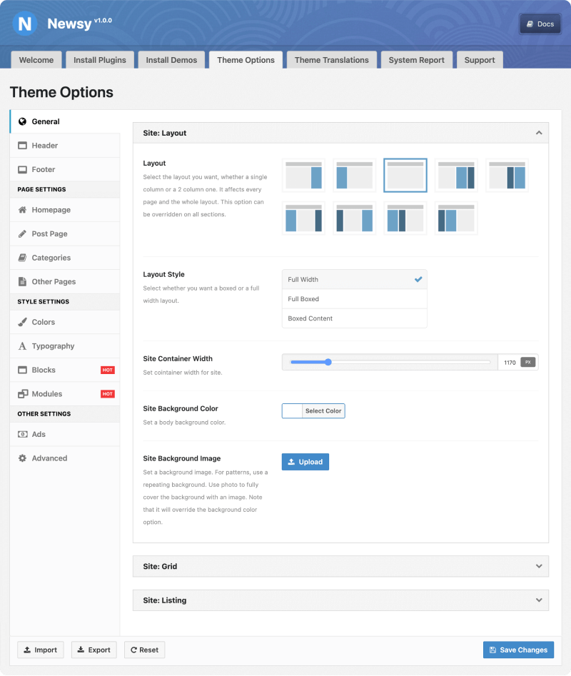

Newsy has an option panel with comprehensive settings and customization. You can manage most of the theme features from here. Also we add new features to Newsy option panel in every new update. Huge and easy customization of different parts of theme is one of the most important features of Newsy and Theme Options plays an important role in it. Features you can find in this panel are equal to tenth plugin!
Theme Option Panel
In theme panel go to Newsy → Theme Options, here you see various tabs:

In next sections we describe these tabs in detail. Keep reading to get familiar with this comprehensive option panel. As you read these sections, you come to this conclusion the panel is so user friendly. Read a brief introduction for every tab:
-
General
Here you can set the global layout, grid and listing options. -
Header
Header Layout, components, styles, colors can be managed from here. -
Footer
Footer Layout, components, styles, colors can be managed from here. -
Homepage
In case if from Homepage Settings set latest posts you can manage everything related home page. -
Post Page
Here you can change global settings for Single posts. -
Categories
Here you can change global settings for Category pages. -
Other Pages
(Archive and plugin page options)
Here you can change global settings for Archive pages (categories, tags, search page) and other plugin page (BuddyPress, WooCommerce, bbPress) layout options. -
Colors
Here you can manage displaying colors of all parts, for example: Highlight Color, Block Color etc. -
Typography
Manage your website fonts in detail. It’s possible to customize typography of Post, Header, Footer, Widget, Archive, Block & Listing. -
Blocks and Modules
This is global setting for Newsy exclusive content blocks. Title Length, Excerpt Length, Post Meta, Post Format Icon, Category Badge and Read More button are examples of what you can control here. -
Ads
Here you can manage displaying ads.
-
Advanced
Place where adding custom CSS code can change the styles of the theme and manage other useful options.
Import/Export Theme Options
You can save your theme options settings and if anything goes wrong, you can restore your settings any time.
Export your saved theme settings.
- Go To Newsy → Theme Options
- From the bottom of the screen, click on Export
- Automatically download will start with your theme settings file (.json)
Import your previously saved theme settings.
- Go To Newsy → Theme Options
- From the bottom of the screen, click on Import
- Click on Choose file from your computer and select your previously saved .json file
- Click on Import